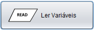

O read é uma função que pede ao utilizador uma introdução de valores para as variaveis descritas no programa.
Existe dois métodos para a leitura de variaveis.
Podemos definir uma variavel e ler depois.
Botão que representa a criação da variavel
Menu da criação da variavel

Botão que representa a leitura da variavel

Menu que abre depois de pressionar o botão acima, este menu é onde se vai escrever o que se vai ler:

Variavel x defenida

Variavel x para ser lida

Fluxograma como exemplo

Execução do Fluxograma

O outro método é mais simples
Basta lermos a variavel x que o programa declara-a no inicio
De seguida temos um exemplo de um fluxograma